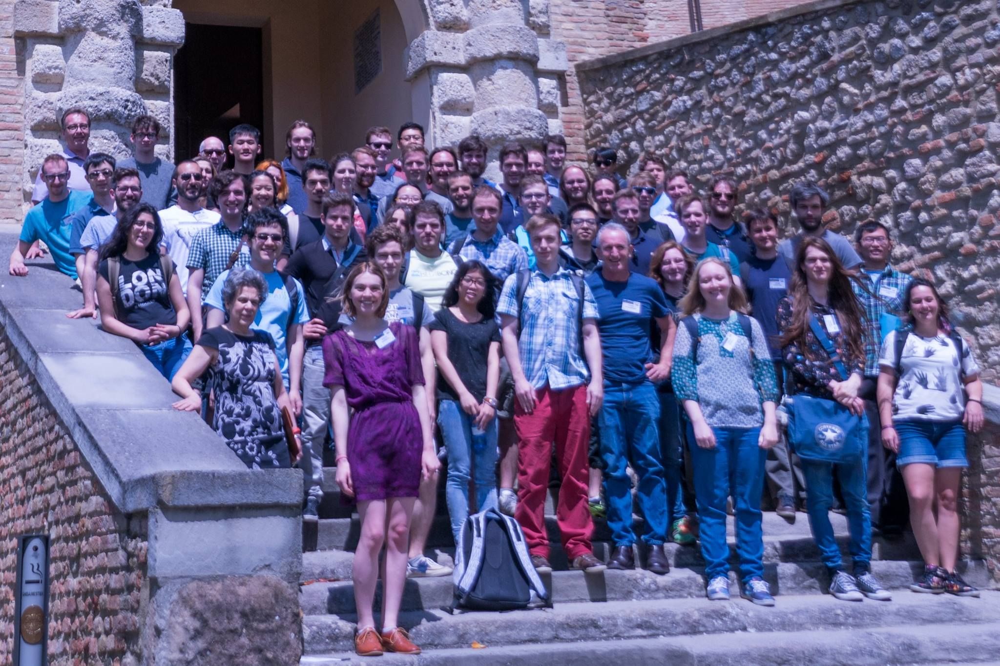
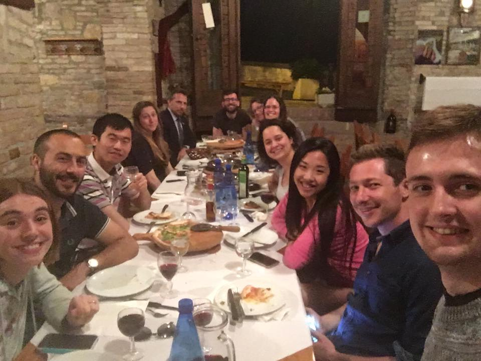
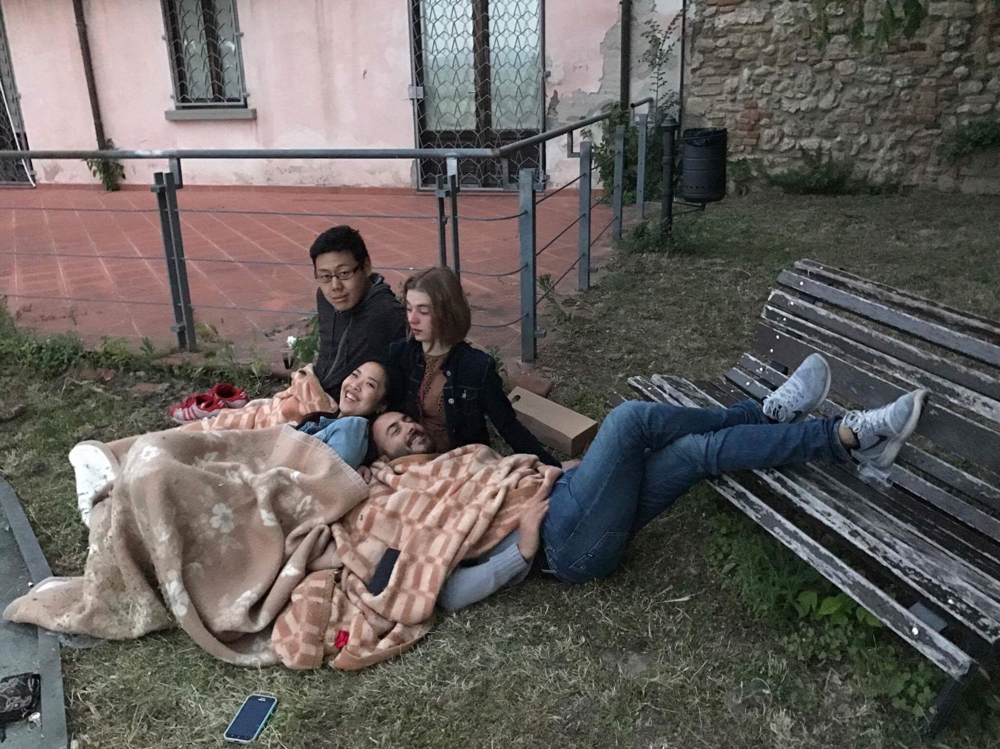

June 17th, 2017
What I Learned at Summer School,
Part 3: Final Thoughts
For the dessert course of this blog series, I want to remember some of the non-technical things I learned. There were so many things that really surprised me and made PLISS more than just a week of school.

The whole crew in front of the castle.
So, in no particular order:
- Academics are regular people. They like it when people take interest in them (and not just in their research), they drink wine, they don't know everything.
- The end goal for a new programming language is not always widespread adoption.
- It can still be worthwhile to work on a language that may never be widely adopted.
- PL departments at different institutions do completely different research, and the stuff you're surrounded by at your home institution leaves a mark.
- Professors like going out with us students.

Dinner in the Bertinoro town.
- I can learn more in a 10-minute conversation than in hours spent reading papers.
- Sometimes good technical ideas don't work in practice because software engineers have different needs and problems than we imagine. It might even be okay if we're not imagining them, because some ideas don't need to work in practice (yet).
- How you present your idea is just as important as your idea. Making good slides and engaging with the audience is hard.
- It is completely okay to ask dumb questions even if it seems like I'm the only one lost (which is probably not true, and the question is probably not as dumb as I think).
- We should all have half-hour coffee breaks with cake and fruit twice a day, every day.

Outside on the balcony during a coffee break.
- Formality is not a requirement to be able to talk about programming language ideas. Being able and willing to explain something simply attracts and enables more people to contribute to that area of research.
- As a student, it's okay to have opinions about other people's research, good or bad. But be aware of how your home school, or what you learned in an introductory CS course, or your own research work might color your opinions.
- It's also okay to not have any opinions about something.
- When you get lost during lecture, resist the urge to tune out and mess around on Facebook. Sitting there and letting the information wash over you will be useful in the long run (according to Ron, my run isn't long enough yet for me to confirm this ;-) ). Don't bring a laptop to lecture if you don't need to.
- If you open yourself up to other people, often they will reciprocate. You never know who you'll meet -- I found some of my favourite people in the world at PLISS.

Sunrise on the last day.
I am so grateful to the folks who made it financially possible for me to attend PLISS -- it was one of the best weeks of my life. Hopefully these blog posts will help me to remember as much of it as possible. Until the next summer school ... :-)